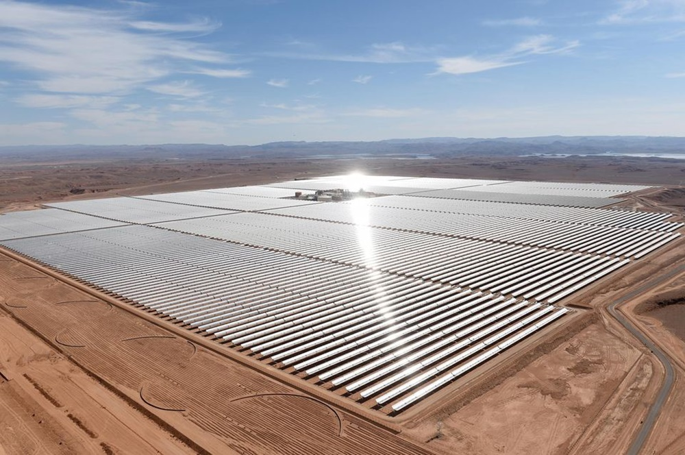

-L'évolution de nombre d'entreprises à Drâa Tafilalet-
Création des entreprises
La carte suivante présente l'évolution du nombre d'entreprises au cours des années 2014,2015 et 2016 à Drâa-Tafilalet.Ce nombre a connu une augmentation légère au cours de trois ans pour quelques provinces ,une stagnation ou un recul pour d'autres.La province d'Ouarzazate a vu la création de plus grand nombre d'entreprises allant de 669 entreprises en 2014 à 712 entreprises en 2016 grâce aux potentiels agricoles,touristiques et culturels qui attirent les investisseurs

La centrale solaire Noor à la province de Ouarzazate